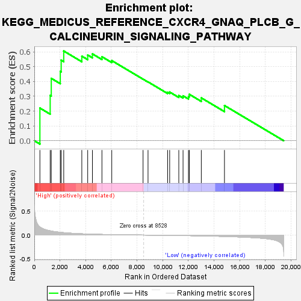
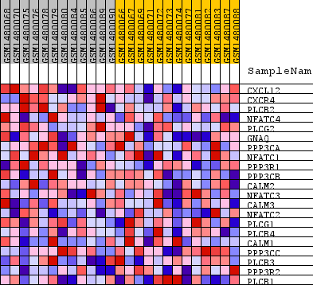
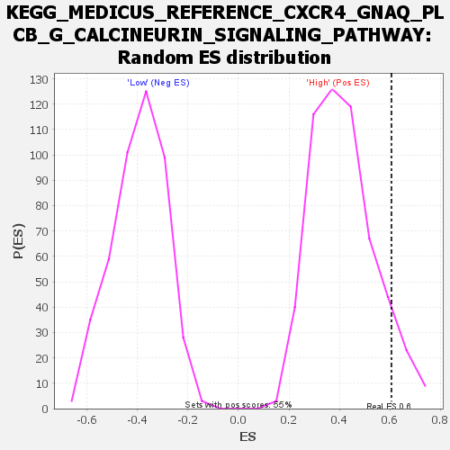

| Dataset | WG6v3.CYGB.cls#High_versus_Low.CYGB.cls#High_versus_Low_repos |
| Phenotype | CYGB.cls#High_versus_Low_repos |
| Upregulated in class | High |
| GeneSet | KEGG_MEDICUS_REFERENCE_CXCR4_GNAQ_PLCB_G_CALCINEURIN_SIGNALING_PATHWAY |
| Enrichment Score (ES) | 0.60589796 |
| Normalized Enrichment Score (NES) | 1.4626471 |
| Nominal p-value | 0.080438755 |
| FDR q-value | 0.4016687 |
| FWER p-Value | 1.0 |

| SYMBOL | TITLE | RANK IN GENE LIST | RANK METRIC SCORE | RUNNING ES | CORE ENRICHMENT | |
|---|---|---|---|---|---|---|
| 1 | CXCL12 | CXCL12 | 435 | 0.171 | 0.2206 | Yes |
| 2 | CXCR4 | CXCR4 | 1236 | 0.089 | 0.3058 | Yes |
| 3 | PLCB2 | PLCB2 | 1321 | 0.084 | 0.4213 | Yes |
| 4 | NFATC4 | NFATC4 | 2022 | 0.058 | 0.4682 | Yes |
| 5 | PLCG2 | PLCG2 | 2092 | 0.056 | 0.5442 | Yes |
| 6 | GNAQ | GNAQ | 2291 | 0.051 | 0.6059 | Yes |
| 7 | PPP3CA | PPP3CA | 3699 | 0.027 | 0.5710 | No |
| 8 | NFATC1 | NFATC1 | 4157 | 0.022 | 0.5787 | No |
| 9 | PPP3R1 | PPP3R1 | 4524 | 0.019 | 0.5865 | No |
| 10 | PPP3CB | PPP3CB | 5266 | 0.013 | 0.5673 | No |
| 11 | CALM2 | CALM2 | 6032 | 0.009 | 0.5411 | No |
| 12 | NFATC3 | NFATC3 | 8468 | 0.000 | 0.4158 | No |
| 13 | CALM3 | CALM3 | 8856 | -0.001 | 0.3973 | No |
| 14 | NFATC2 | NFATC2 | 10381 | -0.006 | 0.3274 | No |
| 15 | PLCG1 | PLCG1 | 10542 | -0.007 | 0.3287 | No |
| 16 | PLCB4 | PLCB4 | 11252 | -0.009 | 0.3054 | No |
| 17 | CALM1 | CALM1 | 11583 | -0.011 | 0.3033 | No |
| 18 | PPP3CC | PPP3CC | 12004 | -0.012 | 0.2990 | No |
| 19 | PLCB3 | PLCB3 | 12070 | -0.013 | 0.3134 | No |
| 20 | PPP3R2 | PPP3R2 | 13004 | -0.017 | 0.2894 | No |
| 21 | PLCB1 | PLCB1 | 14808 | -0.029 | 0.2378 | No |

